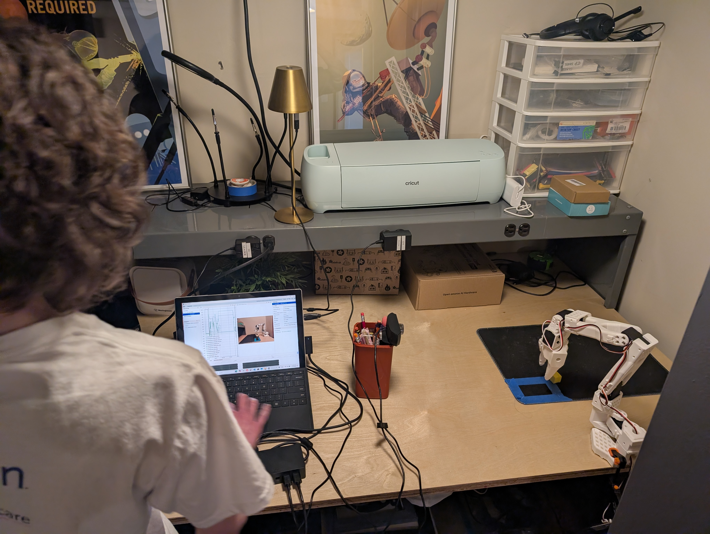
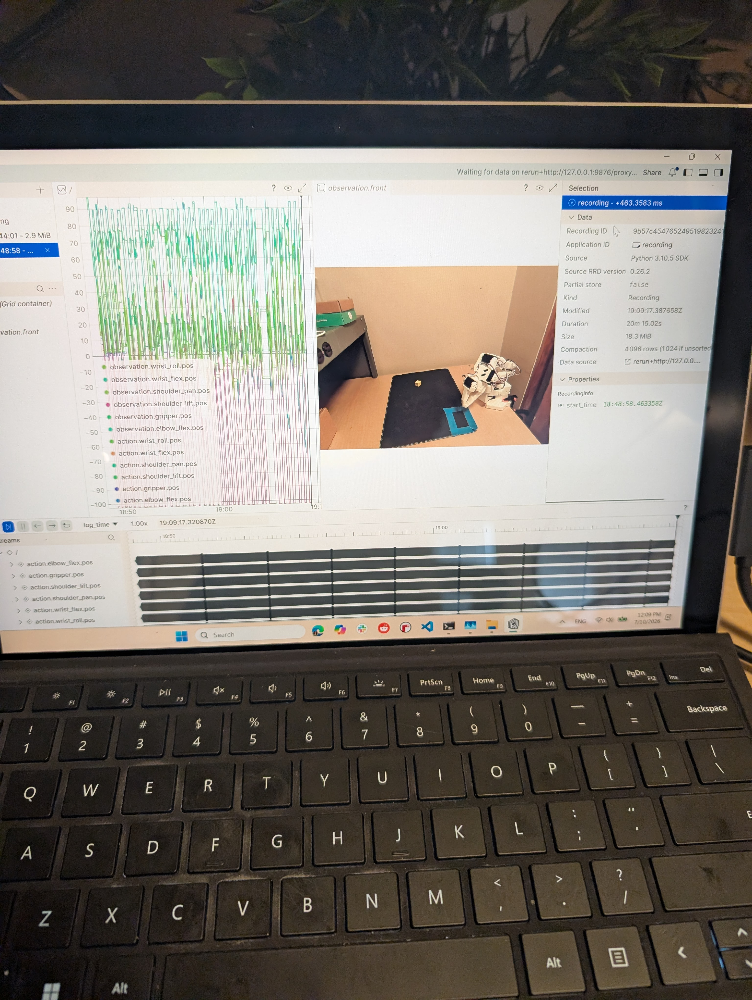
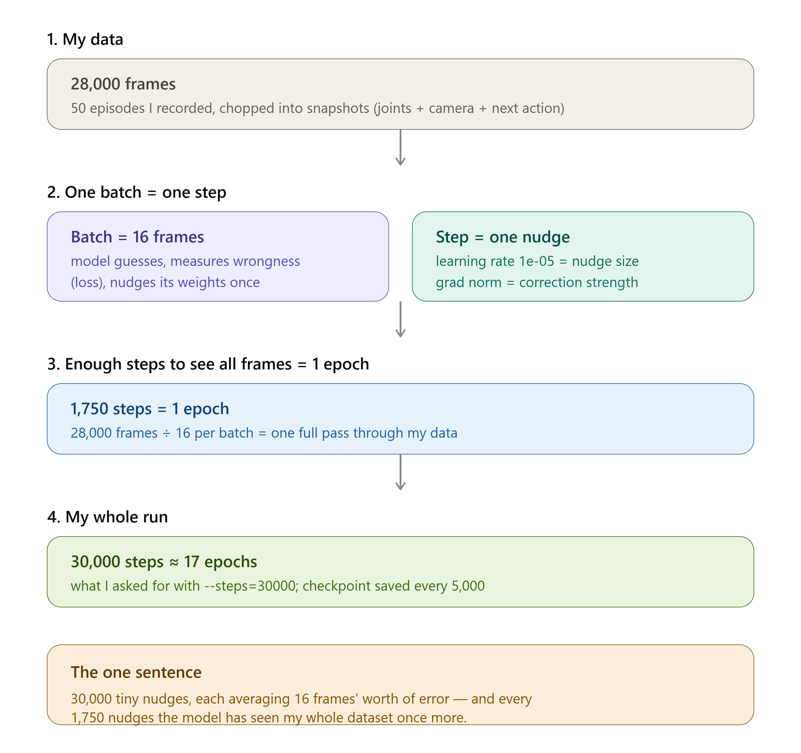

SO-101: teaching a cheap robot arm to do useful things
Zach and I built an SO-101, an open-source robot arm, and I've been learning to program it. There
are two parts: the leader arm, which I call Brachius Rex, and the follower arm, which I call Brachiomimus.
These let me use an approach called imitation learning: the follower arm (Brachiomimus) can learn a
task by watching me demonstrate it over and over via teleoperation (controlling Brachius Rex), rather
than by following rules I write out by hand. I learn better by writing into a lab notebook, but I also
think we need more people sharing the messy middle instead of polished demos. This page is my notebook.
I start with "episodes", or recordings of task demonstrations. Anyone can use these to train "policies", or
models that decide what the arm should do at each moment. Below are my dataset, both training runs, what
went wrong, and an infographic that explains the training math.
Progress
Here's what I've done so far, in order: recording the episodes (task demos), my first training attempt that
failed, and the v2 training that worked.
Step 1 · Morning one
Recording 50 episodes
I spent a morning teleoperating Brachius Rex, the leader arm. I had it move a yellow block to a blue
target fifty times while my laptop recorded every joint movement, camera frame, and action. Each
episode is one complete run of the task from start to finish, with a reset in between. Those 15
minutes of demonstrations became the training data for Brachiomimus.
View the dataset →

This is my workbench: Brachiomimus (Follower arm), the tape-marked workspace, and the laptop I record episodes from.

Episode ten of fifty, with the joint and action data streaming live into Rerun, the tool I use to watch what the arm is doing.
Step 2 · First attempt
I trained a policy, and it glitched
I trained my first Action Chunking Transformer (ACT) policy on the fifty episodes for 5,000 steps
(see the infographic) and eagerly set it up to run on its own. It failed;
the arm twitched in place. It looked like it was trying to move toward the block or the goal but
couldn't quite commit. My first assumption was the obvious one: 50 episodes? I didn't collect enough
data. I dug deep into the refresh rate of my recording and my eval, thinking my Surface laptop was
maxed out.
View this policy (v1) →
Step 3 · Retrain, with tracking
I trained longer, and it worked
I trained again using the exact same fifty demonstrations, but this time for 30,000 steps instead of
5,000. That's roughly 17 full passes over the dataset; the infographic walks
through the math. I tracked the run in Weights & Biases (W&B) so I could watch the learning
happen, and I learned how loss curves work (see the training charts).
The second policy worked! The demonstration dataset hadn't been the bottleneck; my patience was!View this policy (v2) →
Training charts
This report shows three curves from the v2 training run, the one that worked.
Loss is the overall measure of how wrong the policy's predictions are. It should trend
down as training goes on.
L1 measures the same kind of error more directly: the average distance between the arm
position the policy predicted and the real one.
KLD (KL divergence) is a more technical measure of how much the model's internal
representation is drifting. It matters less here, but flat and stable is a good sign; wild swings
would not be.
I didn't track my v1 policy run, so this is not a before-and-after comparison. Just nice to visualize.
The infographic
This is the training math: how fifty recorded episodes turn into 28,000 individual frames of data. It's also what "30,000 steps" means, broken down into nudges and epochs, where an
epoch is one complete pass through the entire dataset.

Resources
The code, the dataset, both trained policies (each saved version is called a checkpoint), and the
training run.
Loss, L1, and KLD from the v2 run; the same charts embedded above.
What's next
I'm still at work on the bench!
In progress
Sim-to-real for episode efficiency. Sim-to-real means training or testing a policy
in a simulated version of the world before trying it on the real arm. The idea here is to see how
few real demonstration episodes I can get away with, by comparing policies trained on fewer real
episodes plus simulated data against the current real-only baseline.
Planned
Migrate to Gr00t N1.7. The plan is to swap the current policy, which was trained
entirely from scratch on my own data, for NVIDIA's Gr00t N1.7. I'll compare how much data it needs,
and how its performance compares to my from-scratch policy.
Exploring
Broader task set. Beyond the current pick-and-place task, I want to test whether
the pipeline can generalize to new objects and manipulation without having to record an entirely new
dataset from scratch.